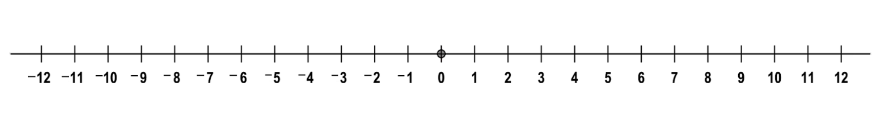
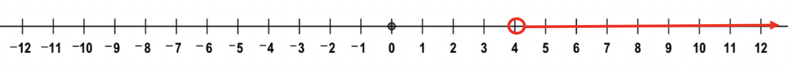
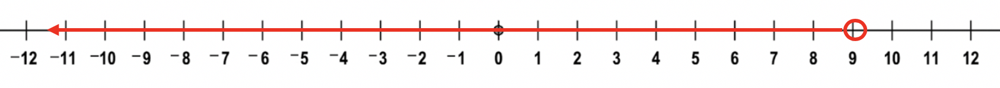
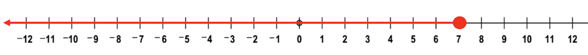
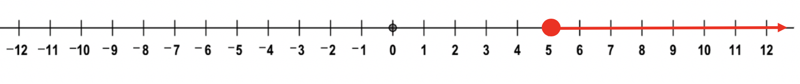
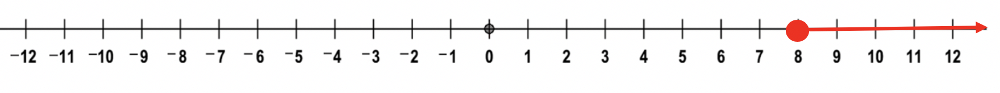
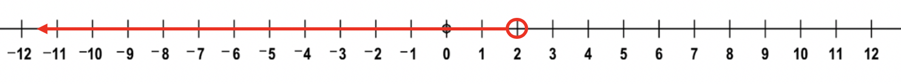

In order to graph an inequality, we can use a number line.

In addition to a number line, we also will need to have an equation to graph. Each equation will have an inequality sign in it.
There are four inequality signs:
greater than (>)
less than (<)
greater than or equal to (≥)
less than or equal to (≤).
Let's first learn about the definitions of each inequality.
Greater than (>) compares two numbers. Whenever you are comparing two numbers, the less than or greater than symbol can be used.
For example, if comparing the numbers 4 and 7, the number 7 is greater than the number 4. We would write the equation 7 > 4.
We can also use the less than sign and say 4 is less than 7: 4 < 7
When using the less than or equal to sign to compare two numbers, typically we will be given an equation and asked if the two numbers are less than or equal to or greater than or equal to eachother.
For example, is 6 ≤ 10?
We need to check two truths: is 6 < 10, or is 6 = 10?
Only one of the two expressions can ever be true, but if one of the two expressions are true, the whole expression is true. In this case, the first expression is true; 6 < 10. Therefore 6 ≤ 10 is considered a true statement.
We can also be asked if two numbers are greater than or equal to eachother.
For example: Is 6 ≥ 2? Again, there are two expressions to check: Either 6 > 2 or 6 = 2. The first expression is true, even though the second expression is false. Remember only one of the two statements has to be true for the expression to be true. In this case, 6 > 2 is true, therefore the question of is 6 ≥ 2 is a true statement.
Let's look at a few false statements:
6 > 2
Is 6 greater than 2?
10 < 5
Is 10 less than 5?
7 ≥ 12
Is 7 greater than or equal to 12?
8 ≤ 9
Is 8 less than or equal to 9?
Each of these examples are considered false statements.
The main goal of this lesson is to create a picture, or graph, of each of the four inequalities. For this, we introduce and use a number line, as seen above.
When using a number line to graph an inequality, there are two different types of points we will plot on our number line. One point is a solid circle ●, the other is an empty circle ○.
The solid circle is used when we are asked if two numbers are greater than or equal to, or if two numbers are less than or equal to eachother.
The empty circle is used when asked if two numbers are less than eachother or greater than eachother.
When graphing inequalities, typically you will be asked to graph all numbers that make a statement true. The variable "x" will be on one side or the other of our expression. We ALWAYS need the variable "x" to be on the left-side of the expression. Otherwise our graph will be backwards.
Let's look at a few examples of graphing inequalities:
Example 1: graph x < 7.
In words, this expression reads "graph all numbers, x, that are less than 7."
Since the less than sign is present, we will use an open circle (○) on the graph to plot all numbers that are less than seven.
The open circle at 7 tells the person reading your graph, 7 is NOT a solution, since 7 < 7 is false. 7 = 7. But 6.99 is less than 7, so we must show where the closest number that is true lies on the number line. So the open circle tells us 7 is false, but 6.99999999 is true.
Example 2: Graph x > 4. This expression reads "graph all numbers that are greater than 4."

The open circle at 4 tells the reader 4 is not a solution because 4 is not greater than 4, but the solid line tells us 4.01 is a solution, as are all numbers to the right of 4.
Example 3: Graph x < 9. Graph all numbers less than 9.
Place the open circle at 9. Numbers less than 9 are: 8, 7, 6, 5, 4, 3, etc. Our arrow must point left towards all the solutions.

Example 4: Graph all numbers less than or equal to 7. Graph x ≤ 7. When graphing ≤ or ≥, our graph will have a closed circle on it. This is because 7 is ≤ 7. (7 = 7) Therefore 7 IS a solution to the expression. By closing the circle, it tells readers the number is a solution, as well as all the numbers in the direction of the arrow. 
Example 5: Graph x ≥ 5. Graph all numbers greater than or equal to 5. The graph has a closed circle at 5 since 5 is a solution to our equation. 5 ≥ 5 is true (5 = 5). All numbers greater than 5 are 6, 7, 8, 9, 10, etc. Our arrow must point to the right.

So how are you suppossed to remember all the different rules: open or closed circle, arrow pointing right or left? Each of these characteristics are based upon the inequality sign that is present in the equation.
The first trick is the arrow direction. For this, look at the inequality sign, < or >. The less than sign looks like the tip of an arrow pointing left (<-----) and the greater than sign looks like an arrow pointing right(------>). So this can be used to determine the direction of the arrows.
When the < or > sign has the line underneath them, ≥ or ≤, the circle is closed. When < or >, the circle is empty. Think of the line underneath the signs as the "filling in" of the circle. When the line isn't there (< or >), the circle is empty. When the line is there (≥ or ≤), the circle is closed.
These two tricks can complete all the graph's characteristics, all you need to do is locate the number in the equation and insert the empty or closed circle, then draw the arrow in the direction of the inequality sign if you pretend it looks like an arrow.
Example 6: Graph x ≥ 8. Since the inequality sign looks like an arrow pointing right (---->) the arrow on the graph will point right. Since the line is under the inequality(≥), the circle will be closed ●, or solid. The circle is placed at the number 8.

Example 7: Graph x < 2. Since the inequality sign looks like an arrow pointing left (<-----) the arrow on the graph will point left. Since the line is not under the inequality(≤), the circle will be open ○. The circle is placed at the number 2.
